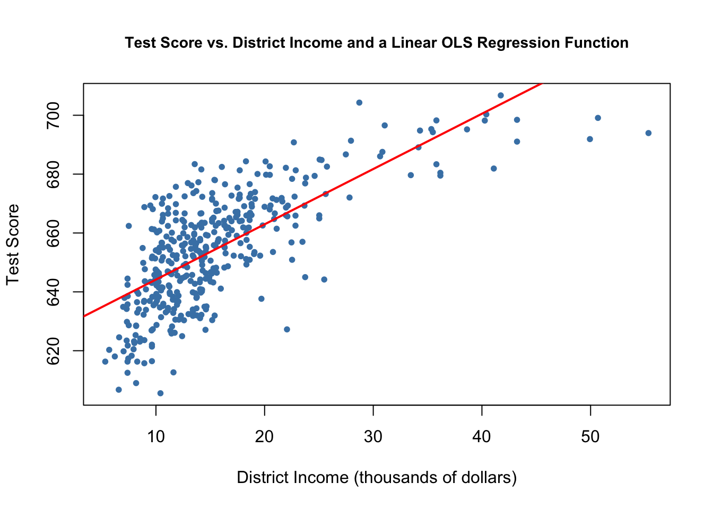
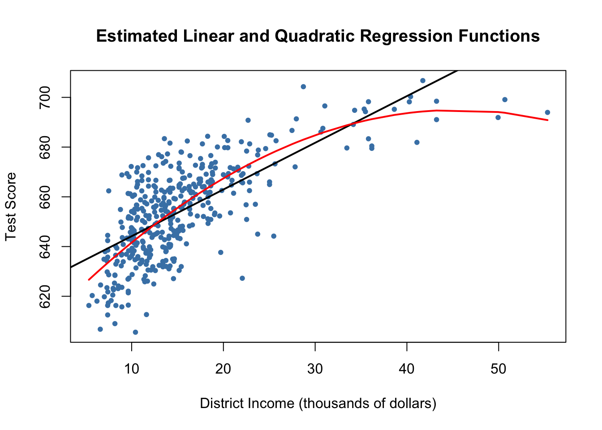
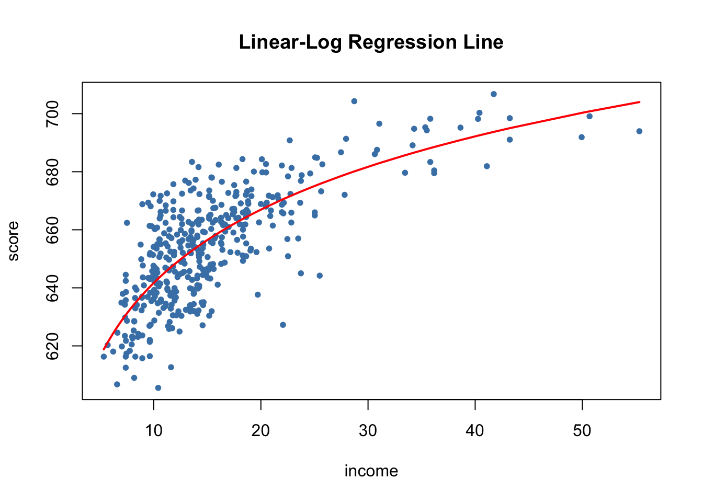
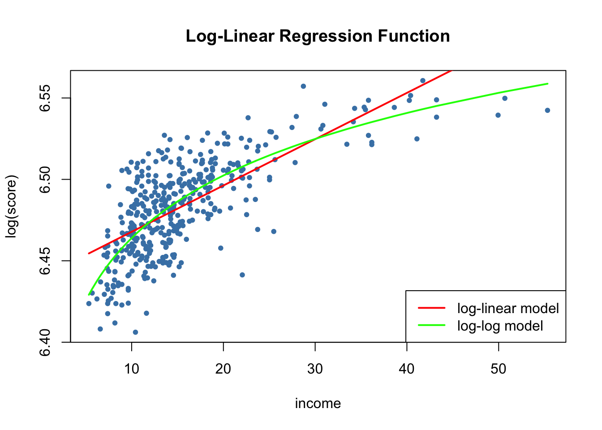
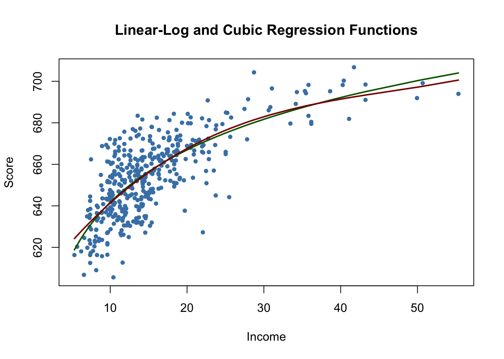
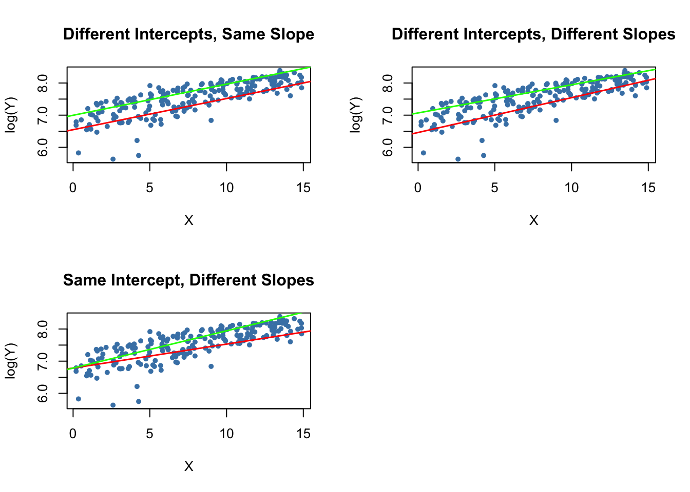
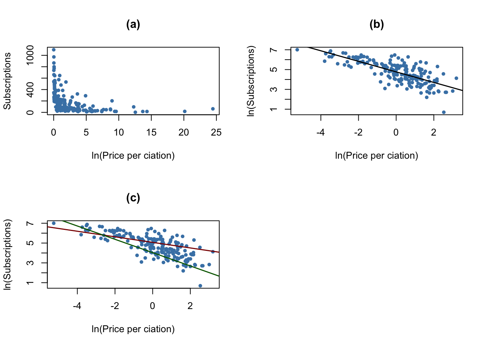
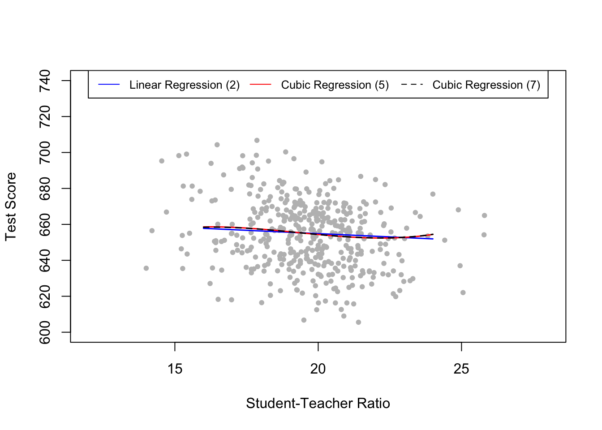

8 Nonlinear Regression Functions
Until now we assumed the regression function to be linear, i.e., we have treated the slope parameter of the regression function as a constant. This implies that the effect on \(Y\) of a one unit change in \(X\) does not depend on the level of \(X\). If, however, the effect of a change in \(X\) on \(Y\) does depend on the value of \(X\), we should use a nonlinear regression function.
Just like for the previous chapter, the packages AER (Christian Kleiber & Zeileis, 2017) and stargazer (Hlavac, 2018) are required for reproduction of the code presented in this chapter. Check whether the code chunk below executes without any error messages.
library(AER)
library(stargazer)8.1 A General Strategy for Modelling Nonlinear Regression Functions
Let us have a look at an example where using a nonlinear regression function is better suited for estimating the population relationship between the regressor, \(X\), and the regressand, \(Y\): the relationship between the income of schooling districts and their test scores.
# prepare the data
library(AER)
data(CASchools)
CASchools$size <- CASchools$students/CASchools$teachers
CASchools$score <- (CASchools$read + CASchools$math) / 2 We start our analysis by computing the correlation between both variables.
cor(CASchools$income, CASchools$score)## [1] 0.7124308Here, income and test scores are positively related: school districts with above average income tend to achieve above average test scores. Does a linear regression function model the data adequately? Let us plot the data and add a linear regression line.
# fit a simple linear model
linear_model<- lm(score ~ income, data = CASchools)
# plot the observations
plot(CASchools$income, CASchools$score,
col = "steelblue",
pch = 20,
xlab = "District Income (thousands of dollars)",
ylab = "Test Score",
cex.main = 0.9,
main = "Test Score vs. District Income and a Linear OLS Regression Function")
# add the regression line to the plot
abline(linear_model,
col = "red",
lwd = 2)
As pointed out in the book, the linear regression line seems to overestimate the true relationship when income is very high or very low and underestimates it for the middle income group.
Fortunately, OLS does not only handle linear functions of the regressors. We can for example model test scores as a function of income and the square of income. The corresponding regression model is
\[TestScore_i = \beta_0 + \beta_1 \times income_i + \beta_2 \times income_i^2 + u_i,\] called a quadratic regression model. That is, \(income^2\) is treated as an additional explanatory variable. Hence, the quadratic model is a special case of a multivariate regression model. When fitting the model with lm() we have to use the ^ operator in conjunction with the function I() to add the quadratic term as an additional regressor to the argument formula. This is because the regression formula we pass to formula is converted to an object of the class formula. For objects of this class, the operators +, -, * and ^ have a nonarithmetic interpretation. I() ensures that they are used as arithmetical operators, see ?I,
# fit the quadratic Model
quadratic_model <- lm(score ~ income + I(income^2), data = CASchools)
# obtain the model summary
coeftest(quadratic_model, vcov. = vcovHC, type = "HC1")##
## t test of coefficients:
##
## Estimate Std. Error t value Pr(>|t|)
## (Intercept) 607.3017435 2.9017544 209.2878 < 2.2e-16 ***
## income 3.8509939 0.2680942 14.3643 < 2.2e-16 ***
## I(income^2) -0.0423084 0.0047803 -8.8505 < 2.2e-16 ***
## ---
## Signif. codes: 0 '***' 0.001 '**' 0.01 '*' 0.05 '.' 0.1 ' ' 1The output tells us that the estimated regression function is
\[\widehat{TestScore}_i = \underset{(2.90)}{607.3} + \underset{(0.27)}{3.85} \times income_i - \underset{(0.0048)}{0.0423} \times income_i^2.\]
This model allows us to test the hypothesis that the relationship between test scores and district income is linear against the alternative that it is quadratic. This corresponds to testing
\[H_0: \beta_2 = 0 \ \ \text{vs.} \ \ H_1: \beta_2\neq0,\]
since \(\beta_2=0\) corresponds to a simple linear equation and \(\beta_2\neq0\) implies a quadratic relationship. We find that \(t=(\hat\beta_2 - 0)/SE(\hat\beta_2) = -0.0423/0.0048 = -8.81\) so the null is rejected at any common level of significance and we conclude that the relationship is nonlinear. This is consistent with the impression gained from the plot.
We now draw the same scatter plot as for the linear model and add the regression line for the quadratic model. Because abline() can only draw straight lines, it cannot be used here. lines() is a function which allows to draw nonstraight lines, see ?lines. The most basic call of lines() is lines(x_values, y_values) where x_values and y_values are vectors of the same length that provide coordinates of the points to be sequentially connected by a line. This makes it necessary to sort the coordinate pairs according to the X-values. Here we use the function order() to sort the fitted values of score according to the observations of income.
# draw a scatterplot of the observations for income and test score
plot(CASchools$income, CASchools$score,
col = "steelblue",
pch = 20,
xlab = "District Income (thousands of dollars)",
ylab = "Test Score",
main = "Estimated Linear and Quadratic Regression Functions")
# add a linear function to the plot
abline(linear_model, col = "black", lwd = 2)
# add quatratic function to the plot
order_id <- order(CASchools$income)
lines(x = CASchools$income[order_id],
y = fitted(quadratic_model)[order_id],
col = "red",
lwd = 2) 
We see that the quadratic function does fit the data much better than the linear function.
8.2 Nonlinear Functions of a Single Independent Variable
Polynomials
The approach used to obtain a quadratic model can be generalized to polynomial models of arbitrary degree \(r\), \[Y_i = \beta_0 + \beta_1 X_i + \beta_2 X_i^2 + \cdots + \beta_r X_i^r + u_i.\]
A cubic model for instance can be estimated in the same way as the quadratic model; we just have to use a polynomial of degree \(r=3\) in income. This is conveniently done using the function poly().
# estimate a cubic model
cubic_model <- lm(score ~ poly(income, degree = 3, raw = TRUE), data = CASchools)poly() generates orthogonal polynomials which are orthogonal to the constant by default. Here, we set raw = TRUE such that raw polynomials are evaluated, see ?poly.
In practice the question will arise which polynomial order should be chosen. First, similarly as for \(r=2\), we can test the null hypothesis that the true relation is linear against the alternative hypothesis that the relationship is a polynomial of degree \(r\):
\[ H_0: \beta_2=0, \ \beta_3=0,\dots,\beta_r=0 \ \ \ \text{vs.} \ \ \ H_1: \text{at least one} \ \beta_j\neq0, \ j=2,\dots,r \]
This is a joint null hypothesis with \(r-1\) restrictions so it can be tested using the \(F\)-test presented in Chapter 7. linearHypothesis() can be used to conduct such tests. For example, we may test the null of a linear model against the alternative of a polynomial of a maximal degree \(r=3\) as follows.
# test the hypothesis of a linear model against quadratic or polynomial
# alternatives
# set up hypothesis matrix
R <- rbind(c(0, 0, 1, 0),
c(0, 0, 0, 1))
# do the test
linearHypothesis(cubic_model,
hypothesis.matrix = R,
white.adj = "hc1")## Linear hypothesis test
##
## Hypothesis:
## poly(income, degree = 3, raw = TRUE)2 = 0
## poly(income, degree = 3, raw = TRUE)3 = 0
##
## Model 1: restricted model
## Model 2: score ~ poly(income, degree = 3, raw = TRUE)
##
## Note: Coefficient covariance matrix supplied.
##
## Res.Df Df F Pr(>F)
## 1 418
## 2 416 2 37.691 9.043e-16 ***
## ---
## Signif. codes: 0 '***' 0.001 '**' 0.01 '*' 0.05 '.' 0.1 ' ' 1We provide a hypothesis matrix as the argument hypothesis.matrix. This is useful when the coefficients have long names, as is the case here due to using poly(), or when the restrictions include multiple coefficients. How the hypothesis matrix \(\mathbf{R}\) is interpreted by linearHypothesis() is best seen using matrix algebra:
For the two linear constrains above, we have \[\begin{align*} \mathbf{R}\boldsymbol{\beta} =& \mathbf{s} \\ \begin{pmatrix} 0 & 0 & 1 & 0 \\ 0 & 0 & 0 & 1 \end{pmatrix} \begin{pmatrix} \beta_0 \\ \beta_1 \\ \beta_2 \\ \beta_3 \\ \end{pmatrix} =& \begin{pmatrix} 0 \\ 0 \end{pmatrix} \\ \begin{pmatrix} \beta_2 \\ \beta_3 \end{pmatrix}= & \begin{pmatrix} 0 \\ 0 \end{pmatrix}. \end{align*}\]linearHypothesis() uses the zero vector for \(\mathbf{s}\) by default, see ?linearHypothesis.
The \(p\)-value for is very small so that we reject the null hypothesis. However, this does not tell us which \(r\) to choose. In practice, one approach to determine the degree of the polynomial is to use sequential testing:
- Estimate a polynomial model for some maximum value \(r\).
- Use a \(t\)-test to test \(\beta_r = 0\). Rejection of the null means that \(X^r\) belongs in the regression equation.
- Acceptance of the null in step 2 means that \(X^r\) can be eliminated from the model. Continue by repeating step 1 with order \(r-1\) and test whether \(\beta_{r-1}=0\). If the test rejects, use a polynomial model of order \(r-1\).
- If the tests from step 3 rejects, continue with the procedure until the coefficient on the highest power is statistically significant.
There is no unambiguous guideline how to choose \(r\) in step one. However, as pointed out in J. Stock & Watson (2015), economic data is often smooth such that it is appropriate to choose small orders like \(2\), \(3\), or \(4\).
We will demonstrate how to apply sequential testing by the example of the cubic model.
summary(cubic_model)##
## Call:
## lm(formula = score ~ poly(income, degree = 3, raw = TRUE), data = CASchools)
##
## Residuals:
## Min 1Q Median 3Q Max
## -44.28 -9.21 0.20 8.32 31.16
##
## Coefficients:
## Estimate Std. Error t value
## (Intercept) 6.001e+02 5.830e+00 102.937
## poly(income, degree = 3, raw = TRUE)1 5.019e+00 8.595e-01 5.839
## poly(income, degree = 3, raw = TRUE)2 -9.581e-02 3.736e-02 -2.564
## poly(income, degree = 3, raw = TRUE)3 6.855e-04 4.720e-04 1.452
## Pr(>|t|)
## (Intercept) < 2e-16 ***
## poly(income, degree = 3, raw = TRUE)1 1.06e-08 ***
## poly(income, degree = 3, raw = TRUE)2 0.0107 *
## poly(income, degree = 3, raw = TRUE)3 0.1471
## ---
## Signif. codes: 0 '***' 0.001 '**' 0.01 '*' 0.05 '.' 0.1 ' ' 1
##
## Residual standard error: 12.71 on 416 degrees of freedom
## Multiple R-squared: 0.5584, Adjusted R-squared: 0.5552
## F-statistic: 175.4 on 3 and 416 DF, p-value: < 2.2e-16The estimated cubic model stored in cubic_model is
\[ \widehat{TestScore}_i = \underset{(5.83)}{600.1} + \underset{(0.86)}{5.02} \times income -\underset{(0.03)}{0.96} \times income^2 - \underset{(0.00047)}{0.00069} \times income^3. \]
The \(t\)-statistic on \(income^3\) is \(1.42\) so the null that the relationship is quadratic cannot be rejected, even at the \(10\%\) level. This is contrary to the result presented book which reports robust standard errors throughout so we will also use robust variance-covariance estimation to reproduce these results.
# test the hypothesis using robust standard errors
coeftest(cubic_model, vcov. = vcovHC, type = "HC1")##
## t test of coefficients:
##
## Estimate Std. Error t value
## (Intercept) 6.0008e+02 5.1021e+00 117.6150
## poly(income, degree = 3, raw = TRUE)1 5.0187e+00 7.0735e-01 7.0950
## poly(income, degree = 3, raw = TRUE)2 -9.5805e-02 2.8954e-02 -3.3089
## poly(income, degree = 3, raw = TRUE)3 6.8549e-04 3.4706e-04 1.9751
## Pr(>|t|)
## (Intercept) < 2.2e-16 ***
## poly(income, degree = 3, raw = TRUE)1 5.606e-12 ***
## poly(income, degree = 3, raw = TRUE)2 0.001018 **
## poly(income, degree = 3, raw = TRUE)3 0.048918 *
## ---
## Signif. codes: 0 '***' 0.001 '**' 0.01 '*' 0.05 '.' 0.1 ' ' 1The reported standard errors have changed. Furthermore, the coefficient for income^3 is now significant at the \(5\%\) level. This means we reject the hypothesis that the regression function is quadratic against the alternative that it is cubic. Furthermore, we can also test if the coefficients for income^2 and income^3 are jointly significant using a robust version of the \(F\)-test.
# perform robust F-test
linearHypothesis(cubic_model,
hypothesis.matrix = R,
vcov. = vcovHC, type = "HC1")## Linear hypothesis test
##
## Hypothesis:
## poly(income, degree = 3, raw = TRUE)2 = 0
## poly(income, degree = 3, raw = TRUE)3 = 0
##
## Model 1: restricted model
## Model 2: score ~ poly(income, degree = 3, raw = TRUE)
##
## Note: Coefficient covariance matrix supplied.
##
## Res.Df Df F Pr(>F)
## 1 418
## 2 416 2 29.678 8.945e-13 ***
## ---
## Signif. codes: 0 '***' 0.001 '**' 0.01 '*' 0.05 '.' 0.1 ' ' 1With a \(p\)-value of \(9.043e^{-16}\), i.e., much less than \(0.05\), the null hypothesis of linearity is rejected in favor of the alternative that the relationship is quadratic or cubic.
Interpretation of Coefficients in Nonlinear Regression Models
The coefficients in polynomial regression do not have a simple interpretation. Why? Think of a quadratic model: it is not helpful to think of the coefficient on \(X\) as the expected change in \(Y\) associated with a change in \(X\) holding the other regressors constant because \(X^2\) changes as \(X\) varies. This is also the case for other deviations from linearity, for example in models where regressors and/or the dependent variable are log-transformed. A way to approach this is to calculate the estimated effect on \(Y\) associated with a change in \(X\) for one or more values of \(X\). This idea is summarized in Key Concept 8.1.
Key Concept 8.1
The Expected Effect on \(Y\) of a Change in \(X_1\) in a Nonlinear Regression Model
Consider the nonlinear population regression model
\[ Y_i = f(X_{1i}, X_{2i}, \dots, X_{ki}) + u_i \ , \ i=1,\dots,n,\]
where \(f(X_{1i}, X_{2i}, \dots, X_{ki})\) is the population regression function and \(u_i\) is the error term.
Denote by \(\Delta Y\) the expected change in \(Y\) associated with \(\Delta X_1\), the change in \(X_1\) while holding \(X_2, \cdots , X_k\) constant. That is, the expected change in \(Y\) is the difference
\[\Delta Y = f(X_1 + \Delta X_1, X_2, \cdots, X_k) - f(X_1, X_2, \cdots, X_k).\]
The estimator of this unknown population difference is the difference between the predicted values for these two cases. Let \(\hat{f}(X_1, X_2, \cdots, X_k)\) be the predicted value of of \(Y\) based on the estimator \(\hat{f}\) of the population regression function. Then the predicted change in \(Y\) is
\[\Delta \widehat{Y} = \hat{f}(X_1 + \Delta X_1, X_2, \cdots, X_k) - \hat{f}(X_1, X_2, \cdots, X_k).\]For example, we may ask the following: what is the predicted change in test scores associated with a one unit change (i.e., \(\$1000\)) in income, based on the estimated quadratic regression function
\[\widehat{TestScore} = 607.3 + 3.85 \times income - 0.0423 \times income^2\ ?\]
Because the regression function is quadratic, this effect depends on the initial district income. We therefore consider two cases:
An increase in district income form \(10\) to \(11\) (from \(\$10000\) per capita to \(\$11000\)).
An increase in district income from \(40\) to \(41\) (that is from \(\$40000\) to \(\$41000\)).
In order to obtain the \(\Delta \widehat{Y}\) associated with a change in income form \(10\) to \(11\), we use the following formula:
\[\Delta \widehat{Y} = \left(\hat{\beta}_0 + \hat{\beta}_1 \times 11 + \hat{\beta}_2 \times 11^2\right) - \left(\hat{\beta}_0 + \hat{\beta}_1 \times 10 + \hat{\beta}_2 \times 10^2\right) \] To compute \(\widehat{Y}\) using R we may use predict().
# compute and assign the quadratic model
quadriatic_model <- lm(score ~ income + I(income^2), data = CASchools)
# set up data for prediction
new_data <- data.frame(income = c(10, 11))
# do the prediction
Y_hat <- predict(quadriatic_model, newdata = new_data)
# compute the difference
diff(Y_hat)## 2
## 2.962517Analogously we can compute the effect of a change in district income from \(40\) to \(41\):
# set up data for prediction
new_data <- data.frame(income = c(40, 41))
# do the prediction
Y_hat <- predict(quadriatic_model, newdata = new_data)
# compute the difference
diff(Y_hat)## 2
## 0.4240097So for the quadratic model, the expected change in \(TestScore\) induced by an increase in \(income\) from \(10\) to \(11\) is about \(2.96\) points but an increase in \(income\) from \(40\) to \(41\) increases the predicted score by only \(0.42\). Hence, the slope of the estimated quadratic regression function is steeper at low levels of income than at higher levels.
Logarithms
Another way to specify a nonlinear regression function is to use the natural logarithm of \(Y\) and/or \(X\). Logarithms convert changes in variables into percentage changes. This is convenient as many relationships are naturally expressed in terms of percentages.
There are three different cases in which logarithms might be used.
Transform \(X\) with its logarithm, but not \(Y\).
Analogously we could transform \(Y\) to its logarithm but leave \(X\) at level.
Both \(Y\) and \(X\) are transformed to their logarithms.
The interpretation of the regression coefficients is different in each case.
Case I: \(X\) is in Logarithm, \(Y\) is not.
The regression model then is \[Y_i = \beta_0 + \beta_1 \times \ln(X_i) + u_i \text{, } i=1,...,n. \] Similar as for polynomial regression we do not have to create a new variable before using lm(). We can simply adjust the formula argument of lm() to tell R that the log-transformation of a variable should be used.
# estimate a level-log model
LinearLog_model <- lm(score ~ log(income), data = CASchools)
# compute robust summary
coeftest(LinearLog_model,
vcov = vcovHC, type = "HC1")##
## t test of coefficients:
##
## Estimate Std. Error t value Pr(>|t|)
## (Intercept) 557.8323 3.8399 145.271 < 2.2e-16 ***
## log(income) 36.4197 1.3969 26.071 < 2.2e-16 ***
## ---
## Signif. codes: 0 '***' 0.001 '**' 0.01 '*' 0.05 '.' 0.1 ' ' 1Hence, the estimated regression function is
\[\widehat{TestScore} = 557.8 + 36.42 \times \ln(income).\]
Let us draw a plot of this function.
# draw a scatterplot
plot(score ~ income,
col = "steelblue",
pch = 20,
data = CASchools,
main = "Linear-Log Regression Line")
# add the linear-log regression line
order_id <- order(CASchools$income)
lines(CASchools$income[order_id],
fitted(LinearLog_model)[order_id],
col = "red",
lwd = 2)
We can interpret \(\hat{\beta}_1\) as follows: a \(1\%\) increase in income is associated with an increase in test scores of \(0.01 \times 36.42 = 0.36\) points. In order to get the estimated effect of a one unit change in income (that is, a change in the original units, thousands of dollars) on test scores, the method presented in Key Concept 8.1 can be used.
# set up new data
new_data <- data.frame(income = c(10, 11, 40, 41))
# predict the outcomes
Y_hat <- predict(LinearLog_model, newdata = new_data)
# compute the expected difference
Y_hat_matrix <- matrix(Y_hat, nrow = 2, byrow = TRUE)
Y_hat_matrix[, 2] - Y_hat_matrix[, 1]## [1] 3.471166 0.899297By setting nrow = 2 and byrow = TRUE in matrix() we ensure that Y_hat_matrix is a \(2\times2\) matrix filled row-wise with the entries of Y_hat.
The estimated model states that for an income increase from \(\$10000\) to \(\$11000\), test scores increase by an expected amount of \(3.47\) points. When income increases from \(\$40000\) to \(\$41000\), the expected increase in test scores is only about \(0.90\) points.
Case II: \(Y\) is in Logarithm, \(X\) is not
There are cases where it is useful to regress \(\ln(Y)\).
The corresponding regression model then is
\[ \ln(Y_i) = \beta_0 + \beta_1 \times X_i + u_i , \ \ i=1,...,n. \]
# estimate a log-linear model
LogLinear_model <- lm(log(score) ~ income, data = CASchools)
# obtain a robust coefficient summary
coeftest(LogLinear_model,
vcov = vcovHC, type = "HC1")##
## t test of coefficients:
##
## Estimate Std. Error t value Pr(>|t|)
## (Intercept) 6.43936234 0.00289382 2225.210 < 2.2e-16 ***
## income 0.00284407 0.00017509 16.244 < 2.2e-16 ***
## ---
## Signif. codes: 0 '***' 0.001 '**' 0.01 '*' 0.05 '.' 0.1 ' ' 1The estimated regression function is \[\widehat{\ln(TestScore)} = 6.439 + 0.00284 \times income.\] An increase in district income by \(\$1000\) is expected to increase test scores by \(100\times 0.00284 \% = 0.284\%\).
When the dependent variable in logarithm, one cannot simply use \(e^{\log(\cdot)}\) to transform predictions back to the original scale, see page of the book.
Case III: \(X\) and \(Y\) are in Logarithms
The log-log regression model is \[\ln(Y_i) = \beta_0 + \beta_1 \times \ln(X_i) + u_i, \ \ i=1,...,n.\]
# estimate the log-log model
LogLog_model <- lm(log(score) ~ log(income), data = CASchools)
# print robust coefficient summary to the console
coeftest(LogLog_model,
vcov = vcovHC, type = "HC1")##
## t test of coefficients:
##
## Estimate Std. Error t value Pr(>|t|)
## (Intercept) 6.3363494 0.0059246 1069.501 < 2.2e-16 ***
## log(income) 0.0554190 0.0021446 25.841 < 2.2e-16 ***
## ---
## Signif. codes: 0 '***' 0.001 '**' 0.01 '*' 0.05 '.' 0.1 ' ' 1The estimated regression function hence is \[\widehat{\ln(TestScore)} = 6.336 + 0.0554 \times \ln(income).\] In a log-log model, a \(1\%\) change in \(X\) is associated with an estimated \(\hat\beta_1 \%\) change in \(Y\).
We now reproduce Figure 8.5 of the book.
# generate a scatterplot
plot(log(score) ~ income,
col = "steelblue",
pch = 20,
data = CASchools,
main = "Log-Linear Regression Function")
# add the log-linear regression line
order_id <- order(CASchools$income)
lines(CASchools$income[order_id],
fitted(LogLinear_model)[order_id],
col = "red",
lwd = 2)
# add the log-log regression line
lines(sort(CASchools$income),
fitted(LogLog_model)[order(CASchools$income)],
col = "green",
lwd = 2)
# add a legend
legend("bottomright",
legend = c("log-linear model", "log-log model"),
lwd = 2,
col = c("red", "green"))
Key Concept 8.2 summarizes the three logarithmic regression models.
Key Concept 8.2
Logarithms in Regression: Three Cases
Logarithms can be used to transform the dependent variable \(Y\) or the independent variable \(X\), or both (the variable being transformed must be positive). The following table summarizes these three cases and the interpretation of the regression coefficient \(\beta_1\). In each case, \(\beta_1\), can be estimated by applying OLS after taking the logarithm(s) of the dependent and/or the independent variable.
| Case | Model Specification | Interpretation of \(\beta_1\) |
|---|---|---|
| \((I)\) | \(Y_i = \beta_0 + \beta_1 \ln(X_i) + u_i\) | A \(1 \%\) change in \(X\) is associated with a change in \(Y\) of \(0.01 \times \beta_1\). |
| \((II)\) | \(\ln(Y_i) = \beta_0 + \beta_1 X_i + u_i\) | A change in \(X\) by one unit (\(\Delta X = 1\)) is associated with a \(100 \times \beta_1 \%\) change in \(Y\). |
| \((III)\) | \(\ln(Y_i) = \beta_0 + \beta_1 \ln(X_i) + u_i\) | A \(1\%\) change in \(X\) is associated with a \(\beta_1\%\) change in \(Y\), so \(\beta_1\) is the elasticity of \(Y\) with respect to \(X\). |
Of course we can also estimate a polylog model like
\[ TestScore_i = \beta_0 + \beta_1 \times \ln(income_i) + \beta_2 \times \ln(income_i)^2 + \beta_3 \times \ln(income_i)^3 + u_i \]
which models the dependent variable \(TestScore\) by a third-degree polynomial of the log-transformed regressor \(income\).
# estimate the polylog model
polyLog_model <- lm(score ~ log(income) + I(log(income)^2) + I(log(income)^3),
data = CASchools)
# print robust summary to the console
coeftest(polyLog_model,
vcov = vcovHC, type = "HC1")##
## t test of coefficients:
##
## Estimate Std. Error t value Pr(>|t|)
## (Intercept) 486.1341 79.3825 6.1239 2.115e-09 ***
## log(income) 113.3820 87.8837 1.2901 0.1977
## I(log(income)^2) -26.9111 31.7457 -0.8477 0.3971
## I(log(income)^3) 3.0632 3.7369 0.8197 0.4128
## ---
## Signif. codes: 0 '***' 0.001 '**' 0.01 '*' 0.05 '.' 0.1 ' ' 1Comparing by \(\bar{R}^2\) we find that, leaving out the log-linear model, all models have a similar adjusted fit. In the class of polynomial models, the cubic specification has the highest \(\bar{R}^2\) whereas the linear-log specification is the best of the log-models.
# compute the adj. R^2 for the nonlinear models
adj_R2 <-rbind("quadratic" = summary(quadratic_model)$adj.r.squared,
"cubic" = summary(cubic_model)$adj.r.squared,
"LinearLog" = summary(LinearLog_model)$adj.r.squared,
"LogLinear" = summary(LogLinear_model)$adj.r.squared,
"LogLog" = summary(LogLog_model)$adj.r.squared,
"polyLog" = summary(polyLog_model)$adj.r.squared)
# assign column names
colnames(adj_R2) <- "adj_R2"
adj_R2## adj_R2
## quadratic 0.5540444
## cubic 0.5552279
## LinearLog 0.5614605
## LogLinear 0.4970106
## LogLog 0.5567251
## polyLog 0.5599944Let us now compare the cubic and the linear-log model by plotting the corresponding estimated regression functions.
# generate a scatterplot
plot(score ~ income,
data = CASchools,
col = "steelblue",
pch = 20,
main = "Linear-Log and Cubic Regression Functions")
# add the linear-log regression line
order_id <- order(CASchools$income)
lines(CASchools$income[order_id],
fitted(LinearLog_model)[order_id],
col = "darkgreen",
lwd = 2)
# add the cubic regression line
lines(x = CASchools$income[order_id],
y = fitted(cubic_model)[order_id],
col = "darkred",
lwd = 2) 
Both regression lines look nearly identical. Altogether the linear-log model may be preferable since it is more parsimonious in terms of regressors: it does not include higher-degree polynomials.
8.3 Interactions Between Independent Variables
There are research questions where it is interesting to learn how the effect on \(Y\) of a change in an independent variable depends on the value of another independent variable. For example, we may ask if districts with many English learners benefit differentially from a decrease in class sizes to those with few English learning students. To assess this using a multiple regression model, we include an interaction term. We consider three cases:
Interactions between two binary variables.
Interactions between a binary and a continuous variable.
Interactions between two continuous variables.
The following subsections discuss these cases briefly and demonstrate how to perform such regressions in R.
Interactions Between Two Binary Variables
Take two binary variables \(D_1\) and \(D_2\) and the population regression model
\[ Y_i = \beta_0 + \beta_1 \times D_{1i} + \beta_2 \times D_{2i} + u_i. \]
Now assume that
\[\begin{align*} Y_i=& \, \ln(Earnings_i),\\ D_{1i} =& \, \begin{cases} 1 & \text{if $i^{th}$ person has a college degree,} \\ 0 & \text{else}. \end{cases} \\ D_{2i} =& \, \begin{cases} 1 & \text{if $i^{th}$ person is female,} \\ 0 & \text{if $i^{th}$ person is male}. \end{cases} \end{align*}\]We know that \(\beta_1\) measures the average difference in \(\ln(Earnings)\) between individuals with and without a college degree and \(\beta_2\) is the gender differential in \(\ln(Earnings)\), ceteris paribus. This model does not allow us to determine if there is a gender specific effect of having a college degree and, if so, how strong this effect is. It is easy to come up with a model specification that allows to investigate this:
\[ Y_i = \beta_0 + \beta_1 \times D_{1i} + \beta_2 \times D_{2i} + \beta_3 \times (D_{1i} \times D_{2i}) + u_i \]
\((D_{1i} \times D_{2i})\) is called an interaction term and \(\beta_3\) measures the difference in the effect of having a college degree for women versus men.
Key Concept 8.3
A Method for Interpreting Coefficients in Regression with Binary Variables
Compute expected values of \(Y\) for each possible set described by the set of binary variables. Compare the expected values. The coefficients can be expressed either as expected values or as the difference between at least two expected values.
Following Key Concept 8.3 we have
\[\begin{align*} E(Y_i\vert D_{1i}=0, D_{2i} = d_2) =& \, \beta_0 + \beta_1 \times 0 + \beta_2 \times d_2 + \beta_3 \times (0 \times d_2) \\ =& \, \beta_0 + \beta_2 \times d_2. \end{align*}\]If \(D_{1i}\) switches from \(0\) to \(1\) we obtain
\[\begin{align*} E(Y_i\vert D_{1i}=1, D_{2i} = d_2) =& \, \beta_0 + \beta_1 \times 1 + \beta_2 \times d_2 + \beta_3 \times (1 \times d_2) \\ =& \, \beta_0 + \beta_1 + \beta_2 \times d_2 + \beta_3 \times d_2. \end{align*}\]Hence, the overall effect is
\[ E(Y_i\vert D_{1i}=1, D_{2i} = d_2) - E(Y_i\vert D_{1i}=0, D_{2i} = d_2) = \beta_1 + \beta_3 \times d_2 \] so the effect is a difference of expected values.
Application to the Student-Teacher Ratio and the Percentage of English Learners
Now let
\[\begin{align*} HiSTR =& \, \begin{cases} 1, & \text{if $STR \geq 20$} \\ 0, & \text{else}, \end{cases} \\ \\ HiEL =& \, \begin{cases} 1, & \text{if $PctEL \geq 10$} \\ 0, & \text{else}. \end{cases} \end{align*}\]We may use R to construct the variables above as follows.
# append HiSTR to CASchools
CASchools$HiSTR <- as.numeric(CASchools$size >= 20)
# append HiEL to CASchools
CASchools$HiEL <- as.numeric(CASchools$english >= 10)We proceed by estimating the model
\[\begin{align} TestScore = \beta_0 + \beta_1 \times HiSTR + \beta_2 \times HiEL + \beta_3 \times (HiSTR \times HiEL) + u_i. \tag{8.1} \end{align}\]There are several ways to add the interaction term to the formula argument when using lm() but the most intuitive way is to use HiEL * HiSTR.7
# estimate the model with a binary interaction term
bi_model <- lm(score ~ HiSTR * HiEL, data = CASchools)
# print a robust summary of the coefficients
coeftest(bi_model, vcov. = vcovHC, type = "HC1")##
## t test of coefficients:
##
## Estimate Std. Error t value Pr(>|t|)
## (Intercept) 664.1433 1.3881 478.4589 < 2.2e-16 ***
## HiSTR -1.9078 1.9322 -0.9874 0.3240
## HiEL -18.3155 2.3340 -7.8472 3.634e-14 ***
## HiSTR:HiEL -3.2601 3.1189 -1.0453 0.2965
## ---
## Signif. codes: 0 '***' 0.001 '**' 0.01 '*' 0.05 '.' 0.1 ' ' 1The estimated regression model is \[\widehat{TestScore} = \underset{(1.39)}{664.1} - \underset{(1.93)}{1.9} \times HiSTR - \underset{(2.33)}{18.3} \times HiEL - \underset{(3.12)}{3.3} \times (HiSTR \times HiEL)\] and it predicts that the effect of moving from a school district with a low student-teacher ratio to a district with a high student-teacher ratio, depending on high or low percentage of english learners is \(-1.9-3.3\times HiEL\). So for districts with a low share of english learners (\(HiEL = 0\)), the estimated effect is a decrease of \(1.9\) points in test scores while for districts with a large fraction of English learners (\(HiEL = 1\)), the predicted decrease in test scores amounts to \(1.9 + 3.3 = 5.2\) points.
We can also use the model to estimate the mean test score for each possible combination of the included binary variables.
# estimate means for all combinations of HiSTR and HiEL
# 1.
predict(bi_model, newdata = data.frame("HiSTR" = 0, "HiEL" = 0))## 1
## 664.1433# 2.
predict(bi_model, newdata = data.frame("HiSTR" = 0, "HiEL" = 1))## 1
## 645.8278# 3.
predict(bi_model, newdata = data.frame("HiSTR" = 1, "HiEL" = 0))## 1
## 662.2354# 4.
predict(bi_model, newdata = data.frame("HiSTR" = 1, "HiEL" = 1))## 1
## 640.6598We now verify that these predictions are differences in the coefficient estimates presented in equation (8.1):
\[\begin{align*} \widehat{TestScore} = \hat\beta_0 = 664.1 \quad &\Leftrightarrow \quad HiSTR = 0, \, HIEL = 0\\ \widehat{TestScore} = \hat\beta_0 + \hat\beta_2 = 664.1 - 18.3 = 645.8 \quad &\Leftrightarrow \quad HiSTR = 0, \, HIEL = 1\\ \widehat{TestScore} = \hat\beta_0 + \hat\beta_1 = 664.1 - 1.9 = 662.2 \quad &\Leftrightarrow \quad HiSTR = 1, \, HIEL = 0\\ \widehat{TestScore} = \hat\beta_0 + \hat\beta_1 + \hat\beta_2 + \hat\beta_3 = 664.1 - 1.9 - 18.3 - 3.3 = 640.6 \quad &\Leftrightarrow \quad HiSTR = 1, \, HIEL = 1 \end{align*}\]Interactions Between a Continuous and a Binary Variable
Now let \(X_i\) denote the years of working experience of person \(i\), which is a continuous variable. We have \[\begin{align*} Y_i =& \, \ln(Earnings_i), \\ \\ X_i =& \, \text{working experience of person }i, \\ \\ D_i =& \, \begin{cases} 1, & \text{if $i^{th}$ person has a college degree} \\ 0, & \text{else}. \end{cases} \end{align*}\]The baseline model thus is
\[ Y_i = \beta_0 + \beta_1 X_i + \beta_2 D_i + u_i, \]
a multiple regression model that allows us to estimate the average benefit of having a college degree holding working experience constant as well as the average effect on earnings of a change in working experience holding college degree constant.
By adding the interaction term \(X_i \times D_i\) we allow the effect of an additional year of work experience to differ between individuals with and without college degree,
\[ Y_i = \beta_0 + \beta_1 X_i + \beta_2 D_i + \beta_3 (X_i \times D_i) + u_i. \]
Here, \(\beta_3\) is the expected difference in the effect of an additional year of work experience for college graduates versus non-graduates. Another possible specification is
\[ Y_i = \beta_0 + \beta_1 X_i + \beta_2 (X_i \times D_i) + u_i. \]
This model states that the expected impact of an additional year of work experience on earnings differs for for college graduates and non-graduates but that graduating on its own does not increase earnings.
All three regression functions can be visualized by straight lines. Key Concept 8.4 summarizes the differences.
Key Concept 8.4
Interactions Between Binary and Continuous Variables
An interaction term like \(X_i \times D_i\) (where \(X_i\) is continuous and \(D_i\) is binary) allows for the slope to depend on the binary variable \(D_i\). There are three possibilities:
- Different intercept and same slope: \[ Y_i = \beta_0 + \beta_1 X_i + \beta_2 D_i + u_i \]
Different intercept and different slope: \[ Y_i = \beta_0 + \beta_1 X_i + \beta_2 D_i + \beta_3 \times (X_i \times D_i) + u_i \]
- Same intercept and different slope: \[ Y_i = \beta_0 + \beta_1 X_i + \beta_2 (X_i \times D_i) + u_i \]
The following code chunk demonstrates how to replicate the results shown in Figure 8.8 of the book using artificial data.
# generate artificial data
set.seed(1)
X <- runif(200,0, 15)
D <- sample(0:1, 200, replace = T)
Y <- 450 + 150 * X + 500 * D + 50 * (X * D) + rnorm(200, sd = 300)
# divide plotting area accordingly
m <- rbind(c(1, 2), c(3, 0))
graphics::layout(m)
# estimate the models and plot the regression lines
# 1. (baseline model)
plot(X, log(Y),
pch = 20,
col = "steelblue",
main = "Different Intercepts, Same Slope")
mod1_coef <- lm(log(Y) ~ X + D)$coefficients
abline(coef = c(mod1_coef[1], mod1_coef[2]),
col = "red",
lwd = 1.5)
abline(coef = c(mod1_coef[1] + mod1_coef[3], mod1_coef[2]),
col = "green",
lwd = 1.5)
# 2. (baseline model + interaction term)
plot(X, log(Y),
pch = 20,
col = "steelblue",
main = "Different Intercepts, Different Slopes")
mod2_coef <- lm(log(Y) ~ X + D + X:D)$coefficients
abline(coef = c(mod2_coef[1], mod2_coef[2]),
col = "red",
lwd = 1.5)
abline(coef = c(mod2_coef[1] + mod2_coef[3], mod2_coef[2] + mod2_coef[4]),
col = "green",
lwd = 1.5)
# 3. (omission of D as regressor + interaction term)
plot(X, log(Y),
pch = 20,
col = "steelblue",
main = "Same Intercept, Different Slopes")
mod3_coef <- lm(log(Y) ~ X + X:D)$coefficients
abline(coef = c(mod3_coef[1], mod3_coef[2]),
col = "red",
lwd = 1.5)
abline(coef = c(mod3_coef[1], mod3_coef[2] + mod3_coef[3]),
col = "green",
lwd = 1.5)
Application to the Student-Teacher Ratio and the Percentage of English Learners
Using a model specification like the second one discussed in Key Concept 8.3 (different slope, different intercept) we may answer the question whether the effect on test scores of decreasing the student-teacher ratio depends on whether there are many or few English learners. We estimate the regression model
\[ \widehat{TestScore_i} = \beta_0 + \beta_1 \times size_i + \beta_2 \times HiEL_i + \beta_2 (size_i \times HiEL_i) + u_i. \]
# estimate the model
bci_model <- lm(score ~ size + HiEL + size * HiEL, data = CASchools)
# print robust summary of coefficients to the console
coeftest(bci_model, vcov. = vcovHC, type = "HC1")##
## t test of coefficients:
##
## Estimate Std. Error t value Pr(>|t|)
## (Intercept) 682.24584 11.86781 57.4871 <2e-16 ***
## size -0.96846 0.58910 -1.6440 0.1009
## HiEL 5.63914 19.51456 0.2890 0.7727
## size:HiEL -1.27661 0.96692 -1.3203 0.1875
## ---
## Signif. codes: 0 '***' 0.001 '**' 0.01 '*' 0.05 '.' 0.1 ' ' 1The estimated regression model is \[ \widehat{TestScore} = \underset{(11.87)}{682.2} - \underset{(0.59)}{0.97} \times size + \underset{(19.51)}{5.6} \times HiEL - \underset{(0.97)}{1.28} \times (size \times HiEL). \] The estimated regression line for districts with a low fraction of English learners (\(HiEL_i=0\)) is \[ \widehat{TestScore} = 682.2 - 0.97\times size_i. \]
For districts with a high fraction of English learners we have
\[\begin{align*} \widehat{TestScore} =& \, 682.2 + 5.6 - 0.97\times size_i - 1.28 \times size_i \\ =& \, 687.8 - 2.25 \times size_i. \end{align*}\]The predicted increase in test scores following a reduction of the student-teacher ratio by \(1\) unit is about \(0.97\) points in districts where the fraction of English learners is low but \(2.25\) in districts with a high share of English learners. From the coefficient on the interaction term \(size \times HiEL\) we see that the difference between both effects is \(1.28\) points.
The next code chunk draws both lines belonging to the model. In order to make observations with \(HiEL = 0\) distinguishable from those with \(HiEL = 1\), we use different colors.
# identify observations with PctEL >= 10
id <- CASchools$english >= 10
# plot observations with HiEL = 0 as red dots
plot(CASchools$size[!id], CASchools$score[!id],
xlim = c(0, 27),
ylim = c(600, 720),
pch = 20,
col = "red",
main = "",
xlab = "Class Size",
ylab = "Test Score")
# plot observations with HiEL = 1 as green dots
points(CASchools$size[id], CASchools$score[id],
pch = 20,
col = "green")
# read out estimated coefficients of bci_model
coefs <- bci_model$coefficients
# draw the estimated regression line for HiEL = 0
abline(coef = c(coefs[1], coefs[2]),
col = "red",
lwd = 1.5)
# draw the estimated regression line for HiEL = 1
abline(coef = c(coefs[1] + coefs[3], coefs[2] + coefs[4]),
col = "green",
lwd = 1.5 )
# add a legend to the plot
legend("topright",
pch = c(20, 20),
col = c("red", "green"),
legend = c("HiEL = 0", "HiEL = 1"))
Interactions Between Two Continuous Variables
Consider a regression model with \(Y\) the log earnings and two continuous regressors \(X_1\), the years of work experience, and \(X_2\), the years of schooling. We want to estimate the effect on wages of an additional year of work experience depending on a given level of schooling. This effect can be assessed by including the interaction term \((X_{1i} \times X_{2i})\) in the model:
\[ \Delta Y_i = \beta_0 + \beta_1 \times X_{1i} + \beta_2 \times X_{2i} + \beta_3 \times (X_{1i} \times X_{2i}) + u_i \]
Following Key Concept 8.1 we find that the effect on \(Y\) of a change on \(X_1\) given \(X_2\) is \[ \frac{\Delta Y}{\Delta X_1} = \beta_1 + \beta_3 X_2. \]
In the earnings example, a positive \(\beta_3\) implies that the effect on log earnings of an additional year of work experience grows linearly with years of schooling. Vice versa we have \[ \frac{\Delta Y}{\Delta X_2} = \beta_2 + \beta_3 X_1 \] as the effect on log earnings of an additional year of schooling holding work experience constant.
Altogether we find that \(\beta_3\) measures the effect of a unit increase in \(X_1\) and \(X_2\) beyond the effects of increasing \(X_1\) alone and \(X_2\) alone by one unit. The overall change in \(Y\) is thus
\[\begin{align} Y_i = (\beta_1 + \beta_3 X_2) \Delta X_1 + (\beta_2 + \beta_3 X_1) \Delta X_2 + \beta_3\Delta X_1 \Delta X_2. \tag{8.2} \end{align}\]Key Concept 8.5 summarizes interactions between two regressors in multiple regression.
Key Concept 8.5
Interactions in Multiple Regression
The interaction term between the two regressors \(X_1\) and \(X_2\) is given by their product \(X_1 \times X_2\). Adding this interaction term as a regressor to the model \[ Y_i = \beta_0 + \beta_1 X_1 + \beta_2 X_2 + u_i \] allows the effect on \(Y\) of a change in \(X_2\) to depend on the value of \(X_1\) and vice versa. Thus the coefficient \(\beta_3\) in the model \[ Y_i = \beta_0 + \beta_1 X_1 + \beta_2 X_2 + \beta_3 (X_1 \times X_2) + u_i \] measures the effect of a one-unit increase in both \(X_1\)
8.3.0.1 Application to the Student-Teacher Ratio and the Percentage of English Learners
We now examine the interaction between the continuous variables student-teacher ratio and the percentage of English learners.
# estimate regression model including the interaction between 'PctEL' and 'size'
cci_model <- lm(score ~ size + english + english * size, data = CASchools)
# print a summary to the console
coeftest(cci_model, vcov. = vcovHC, type = "HC1")##
## t test of coefficients:
##
## Estimate Std. Error t value Pr(>|t|)
## (Intercept) 686.3385268 11.7593466 58.3654 < 2e-16 ***
## size -1.1170184 0.5875136 -1.9013 0.05796 .
## english -0.6729119 0.3741231 -1.7986 0.07280 .
## size:english 0.0011618 0.0185357 0.0627 0.95005
## ---
## Signif. codes: 0 '***' 0.001 '**' 0.01 '*' 0.05 '.' 0.1 ' ' 1The estimated model equation is \[ \widehat{TestScore} = \underset{(11.76)}{686.3} - \underset{(0.59)}{1.12} \times STR - \underset{(0.37)}{0.67} \times PctEL + \underset{(0.02)}{0.0012} \times (STR\times PctEL). \]
For the interpretation, let us consider the quartiles of \(PctEL\).
summary(CASchools$english)## Min. 1st Qu. Median Mean 3rd Qu. Max.
## 0.000 1.941 8.778 15.768 22.970 85.540According to (8.2), if \(PctEL\) is at its median value of \(8.78\), the slope of the regression function relating test scores and the student teacher ratio is predicted to be \(-1.12 + 0.0012 \times 8.78 = -1.11\). This means that increasing the student-teacher ratio by one unit is expected to deteriorate test scores by \(1.11\) points. For the \(75\%\) quantile, the estimated change on \(TestScore\) of a one-unit increase in \(STR\) is estimated by \(-1.12 + 0.0012 \times 23.0 = -1.09\) so the slope is somewhat lower. The interpretation is that for a school district with a share of \(23\%\) English learners, a reduction of the student-teacher ratio by one unit is expected to increase test scores by only \(1.09\) points.
However, the output of summary() indicates that the difference of the effect for the median and the \(75\%\) quantile is not statistically significant. \(H_0: \beta_3 = 0\) cannot be rejected at the \(5\%\) level of significance (the \(p\)-value is \(0.95\)).
Example: The Demand for Economic Journals
In this section we replicate the empirical example presented at pages 336 - 337 of the book. The central question is: how elastic is the demand by libraries for economic journals? The idea here is to analyze the relationship between the number of subscription to a journal at U.S. libraries and the journal’s subscription price. The study uses the data set Journals which is provided with the AER package and contains observations for \(180\) economic journals for the year 2000. You can use the help function (?Journals) to get more information on the data after loading the package.
# load package and the data set
library(AER)
data("Journals")We measure the price as “price per citation” and compute journal age and the number of characters manually. For consistency with the book we also rename the variables.
# define and rename variables
Journals$PricePerCitation <- Journals$price/Journals$citations
Journals$Age <- 2000 - Journals$foundingyear
Journals$Characters <- Journals$charpp * Journals$pages/10^6
Journals$Subscriptions <- Journals$subsThe range of “price per citation” is quite large:
# compute summary statistics for price per citation
summary(Journals$PricePerCitation)## Min. 1st Qu. Median Mean 3rd Qu. Max.
## 0.005223 0.464495 1.320513 2.548455 3.440171 24.459459The lowest price observed is a mere \(0.5\)¢ per citation while the highest price is more than \(20\)¢ per citation.
We now estimate four different model specifications. All models are log-log models. This is useful because it allows us to directly interpret the coefficients as elasticities, see Key Concept 8.2. \((I)\) is a linear model. To alleviate a possible omitted variable bias, \((II)\) augments \((I)\) by the covariates \(\ln(Age)\) and \(\ln(Characters)\). The largest model \((III)\) attempts to capture nonlinearities in the relationship of \(\ln(Subscriptions)\) and \(\ln(PricePerCitation)\) using a cubic regression function of \(\ln(PricePerCitation)\) and also adds the interaction term \((PricePerCitation \times Age)\) while specification \((IV)\) does not include the cubic term.
\[\begin{align*} (I)\quad \ln(Subscriptions_i) =& \, \beta_0 + \beta_1 \ln(PricePerCitation_i) + u_i \\ \\ (II)\quad \ln(Subscriptions_i) =& \, \beta_0 + \beta_1 \ln(PricePerCitation_i) + \beta_4 \ln(Age_i) + \beta_6 \ln(Characters_i) + u_i \\ \\ (III)\quad \ln(Subscriptions_i) =& \, \beta_0 + \beta_1 \ln(PricePerCitation_i) + \beta_2 \ln(PricePerCitation_i)^2 \\ +& \, \beta_3 \ln(PricePerCitation_i)^3 + \beta_4 \ln(Age_i) + \beta_5 \left[\ln(Age_i) \times \ln(PricePerCitation_i)\right] \\ +& \, \beta_6 \ln(Characters_i) + u_i \\ \\ (IV)\quad \ln(Subscriptions_i) =& \, \beta_0 + \beta_1 \ln(PricePerCitation_i) + \beta_4 \ln(Age_i) + \beta_6 \ln(Characters_i) + u_i \end{align*}\]# Estimate models (I) - (IV)
Journals_mod1 <- lm(log(Subscriptions) ~ log(PricePerCitation),
data = Journals)
Journals_mod2 <- lm(log(Subscriptions) ~ log(PricePerCitation)
+ log(Age) + log(Characters),
data = Journals)
Journals_mod3 <- lm(log(Subscriptions) ~
log(PricePerCitation) + I(log(PricePerCitation)^2)
+ I(log(PricePerCitation)^3) + log(Age)
+ log(Age):log(PricePerCitation) + log(Characters),
data = Journals)
Journals_mod4 <- lm(log(Subscriptions) ~
log(PricePerCitation) + log(Age)
+ log(Age):log(PricePerCitation) +
log(Characters),
data = Journals)Using summary(), we obtain the following estimated models:
\[\begin{align*} (I)\quad \widehat{\ln(Subscriptions_i)} =& \, 4.77 - 0.53 \ln(PricePerCitation_i) \\ \\ (II)\quad \widehat{\ln(Subscriptions_i)} =& \, 3.21 - 0.41 \ln(PricePerCitation_i) + 0.42 \ln(Age_i) + 0.21 \ln(Characters_i) \\ \\ (III)\quad \widehat{\ln(Subscriptions_i)} =& \, 3.41 - 0.96 \ln(PricePerCitation_i) + 0.02 \ln(PricePerCitation_i)^2 \\ &+ 0.004 \ln(PricePerCitation_i)^3 + 0.37 \ln(Age_i) \\ &+ 0.16 \left[\ln(Age_i) \times \ln(PricePerCitation_i)\right] \\ &+ 0.23 \ln(Characters_i) \\ \\ (IV)\quad \widehat{\ln(Subscriptions_i)} =& \, 3.43 - 0.90 \ln(PricePerCitation_i) + 0.37 \ln(Age_i) \\ &+ 0.14 \left[\ln(Age_i) \times \ln(PricePerCitation_i)\right] + 0.23 \ln(Characters_i) \end{align*}\]We use an \(F\)-Test to test if the transformations of \(\ln(PricePerCitation)\) in Model \((III)\) are statistically significant.
# F-Test for significance of cubic terms
linearHypothesis(Journals_mod3,
c("I(log(PricePerCitation)^2)=0", "I(log(PricePerCitation)^3)=0"),
vcov. = vcovHC, type = "HC1")## Linear hypothesis test
##
## Hypothesis:
## I(log(PricePerCitation)^2) = 0
## I(log(PricePerCitation)^3) = 0
##
## Model 1: restricted model
## Model 2: log(Subscriptions) ~ log(PricePerCitation) + I(log(PricePerCitation)^2) +
## I(log(PricePerCitation)^3) + log(Age) + log(Age):log(PricePerCitation) +
## log(Characters)
##
## Note: Coefficient covariance matrix supplied.
##
## Res.Df Df F Pr(>F)
## 1 175
## 2 173 2 0.1943 0.8236Clearly, we cannot reject the null hypothesis \(H_0: \beta_3=\beta_4=0\) in model \((III)\).
We now demonstrate how the function stargazer() can be used to generate a tabular representation of all four models.
# load the stargazer package
library(stargazer)
# gather robust standard errors in a list
rob_se <- list(sqrt(diag(vcovHC(Journals_mod1, type = "HC1"))),
sqrt(diag(vcovHC(Journals_mod2, type = "HC1"))),
sqrt(diag(vcovHC(Journals_mod3, type = "HC1"))),
sqrt(diag(vcovHC(Journals_mod4, type = "HC1"))))
# generate a Latex table using stargazer
stargazer(Journals_mod1, Journals_mod2, Journals_mod3, Journals_mod4,
se = rob_se,
digits = 3,
column.labels = c("(I)", "(II)", "(III)", "(IV)"))| Dependent Variable: Logarithm of Subscriptions | ||||
| log(Subscriptions) | ||||
| (I) | (II) | (III) | (IV) | |
| log(PricePerCitation) | -0.533*** | -0.408*** | -0.961*** | -0.899*** |
| (0.034) | (0.044) | (0.160) | (0.145) | |
| I(log(PricePerCitation)2) | 0.017 | |||
| (0.025) | ||||
| I(log(PricePerCitation)3) | 0.004 | |||
| (0.006) | ||||
| log(Age) | 0.424*** | 0.373*** | 0.374*** | |
| (0.119) | (0.118) | (0.118) | ||
| log(Characters) | 0.206** | 0.235** | 0.229** | |
| (0.098) | (0.098) | (0.096) | ||
| log(PricePerCitation):log(Age) | 0.156*** | 0.141*** | ||
| (0.052) | (0.040) | |||
| Constant | 4.766*** | 3.207*** | 3.408*** | 3.434*** |
| (0.055) | (0.380) | (0.374) | (0.367) | |
| Observations | 180 | 180 | 180 | 180 |
| R2 | 0.557 | 0.613 | 0.635 | 0.634 |
| Adjusted R2 | 0.555 | 0.607 | 0.622 | 0.626 |
| Residual Std. Error | 0.750 (df = 178) | 0.705 (df = 176) | 0.691 (df = 173) | 0.688 (df = 175) |
| F Statistic | 224.037*** (df = 1; 178) | 93.009*** (df = 3; 176) | 50.149*** (df = 6; 173) | 75.749*** (df = 4; 175) |
| Note: | *p<0.1; **p<0.05; ***p<0.01 | |||
Table 8.1: Nonlinear Regression Models of Journal Subscribtions
The subsequent code chunk reproduces Figure 8.9 of the book.
# divide plotting area
m <- rbind(c(1, 2), c(3, 0))
graphics::layout(m)
# scatterplot
plot(Journals$PricePerCitation,
Journals$Subscriptions,
pch = 20,
col = "steelblue",
ylab = "Subscriptions",
xlab = "ln(Price per ciation)",
main = "(a)")
# log-log scatterplot and estimated regression line (I)
plot(log(Journals$PricePerCitation),
log(Journals$Subscriptions),
pch = 20,
col = "steelblue",
ylab = "ln(Subscriptions)",
xlab = "ln(Price per ciation)",
main = "(b)")
abline(Journals_mod1,
lwd = 1.5)
# log-log scatterplot and regression lines (IV) for Age = 5 and Age = 80
plot(log(Journals$PricePerCitation),
log(Journals$Subscriptions),
pch = 20,
col = "steelblue",
ylab = "ln(Subscriptions)",
xlab = "ln(Price per ciation)",
main = "(c)")
JM4C <-Journals_mod4$coefficients
# Age = 80
abline(coef = c(JM4C[1] + JM4C[3] * log(80),
JM4C[2] + JM4C[5] * log(80)),
col = "darkred",
lwd = 1.5)
# Age = 5
abline(coef = c(JM4C[1] + JM4C[3] * log(5),
JM4C[2] + JM4C[5] * log(5)),
col = "darkgreen",
lwd = 1.5)
As can be seen from plots (a) and (b), the relation between subscriptions and the citation price is adverse and nonlinear. Log-transforming both variables makes it approximately linear. Plot (c) shows that the price elasticity of journal subscriptions depends on the journal’s age: the red line shows the estimated relationship for \(Age=80\) while the green line represents the prediction from model \((IV)\) for \(Age=5\).
Which conclusion can be drawn?
We conclude that the demand for journals is more elastic for young journals than for old journals.
For model \((III)\) we cannot reject the null hypothesis that the coefficients on \(\ln(PricePerCitation)^2\) and \(\ln(PricePerCitation)^3\) are both zero using an \(F\)-test. This is evidence compatible with a linear relation between log-subscriptions and log-price.
Demand is greater for Journals with more characters, holding price and age constant.
Altogether our estimates suggest that the demand is very inelastic, i.e., the libraries’ demand for economic journals is quite insensitive to the price: using model \((IV)\), even for a young journal (\(Age=5\)) we estimate the price elasticity to be \(-0.899+0.374\times\ln(5)+0.141\times\left[\ln(1)\times\ln(5)\right] \approx -0.3\) so a one percent increase in price is predicted to reduce the demand by only \(0.3\) percent.
This finding comes at no surprise since providing the most recent publications is a necessity for libraries.
8.4 Nonlinear Effects on Test Scores of the Student-Teacher Ratio
In this section we will discuss three specific questions about the relationship between test scores and the student-teacher ratio:
Does the effect on test scores of decreasing the student-teacher ratio depend on the fraction of English learners when we control for economic idiosyncrasies of the different districts?
Does this effect depend on the the student-teacher ratio?
How strong is the effect of decreasing the student-teacher ratio (by two students per teacher) if we take into account economic characteristics and nonlinearities?
Too answer these questions we consider a total of seven models, some of which are nonlinear regression specifications of the types that have been discussed before. As measures for the students’ economic backgrounds, we additionally consider the regressors \(lunch\) and \(\ln(income)\). We use the logarithm of \(income\) because the analysis in Chapter 8.2 showed that the nonlinear relationship between \(income\) and \(TestScores\) is approximately logarithmic. We do not include expenditure per pupil (\(expenditure\)) because doing so would imply that expenditure varies with the student-teacher ratio (see Chapter 7.2 of the book for a detailed argument).
Nonlinear Regression Models of Test Scores
The considered model specifications are:
\[\begin{align} TestScore_i =& \beta_0 + \beta_1 size_i + \beta_4 english_i + \beta_9 lunch_i + u_i \\ TestScore_i =& \beta_0 + \beta_1 size_i + \beta_4 english_i + \beta_9 lunch_i + \beta_{10} \ln(income_i) + u_i \\ TestScore_i =& \beta_0 + \beta_1 size_i + \beta_5 HiEL_i + \beta_6 (HiEL_i\times size_i) + u_i \\ TestScore_i =& \beta_0 + \beta_1 size_i + \beta_5 HiEL_i + \beta_6 (HiEL_i\times size_i) + \beta_9 lunch_i + \beta_{10} \ln(income_i) + u_i \\ TestScore_i =& \beta_0 + \beta_1 size_i + \beta_2 size_i^2 + \beta_5 HiEL_i + \beta_9 lunch_i + \beta_{10} \ln(income_i) + u_i \\ TestScore_i =& \beta_0 + \beta_1 size_i + \beta_2 size_i^2 + \beta_3 size_i^3 + \beta_5 HiEL_i + \beta_6 (HiEL\times size) \\ &+ \beta_7 (HiEL_i\times size_i^2) + \beta_8 (HiEL_i\times size_i^3) + \beta_9 lunch_i + \beta_{10} \ln(income_i) + u_i \\ TestScore_i =& \beta_0 + \beta_1 size_i + \beta_2 size_i^2 + \beta_3 size_i^3 + \beta_4 english + \beta_9 lunch_i + \beta_{10} \ln(income_i) + u_i \end{align}\]# estimate all models
TestScore_mod1 <- lm(score ~ size + english + lunch, data = CASchools)
TestScore_mod2 <- lm(score ~ size + english + lunch + log(income), data = CASchools)
TestScore_mod3 <- lm(score ~ size + HiEL + HiEL:size, data = CASchools)
TestScore_mod4 <- lm(score ~ size + HiEL + HiEL:size + lunch + log(income),
data = CASchools)
TestScore_mod5 <- lm(score ~ size + I(size^2) + I(size^3) + HiEL + lunch + log(income),
data = CASchools)
TestScore_mod6 <- lm(score ~ size + I(size^2) + I(size^3) + HiEL + HiEL:size +
HiEL:I(size^2) + HiEL:I(size^3) + lunch + log(income), data = CASchools)
TestScore_mod7 <- lm(score ~ size + I(size^2) + I(size^3) + english + lunch +
log(income), data = CASchools)We may use summary() to assess the models’ fit. Using stargazer() we may also obtain a tabular representation of all regression outputs and which is more convenient for comparison of the models.
# gather robust standard errors in a list
rob_se <- list(sqrt(diag(vcovHC(TestScore_mod1, type = "HC1"))),
sqrt(diag(vcovHC(TestScore_mod2, type = "HC1"))),
sqrt(diag(vcovHC(TestScore_mod3, type = "HC1"))),
sqrt(diag(vcovHC(TestScore_mod4, type = "HC1"))),
sqrt(diag(vcovHC(TestScore_mod5, type = "HC1"))),
sqrt(diag(vcovHC(TestScore_mod6, type = "HC1"))),
sqrt(diag(vcovHC(TestScore_mod7, type = "HC1"))))
# generate a LaTeX table of regression outputs
stargazer(TestScore_mod1,
TestScore_mod2,
TestScore_mod3,
TestScore_mod4,
TestScore_mod5,
TestScore_mod6,
TestScore_mod7,
digits = 3,
dep.var.caption = "Dependent Variable: Test Score",
se = rob_se,
column.labels = c("(1)", "(2)", "(3)", "(4)", "(5)", "(6)", "(7)"))| Dependent Variable: Test Score | |||||||
| score | |||||||
| (1) | (2) | (3) | (4) | (5) | (6) | (7) | |
| size | -0.998*** | -0.734*** | -0.968 | -0.531 | 64.339*** | 83.702*** | 65.285*** |
| (0.270) | (0.257) | (0.589) | (0.342) | (24.861) | (28.497) | (25.259) | |
| english | -0.122*** | -0.176*** | -0.166*** | ||||
| (0.033) | (0.034) | (0.034) | |||||
| I(size2) | -3.424*** | -4.381*** | -3.466*** | ||||
| (1.250) | (1.441) | (1.271) | |||||
| I(size3) | 0.059*** | 0.075*** | 0.060*** | ||||
| (0.021) | (0.024) | (0.021) | |||||
| lunch | -0.547*** | -0.398*** | -0.411*** | -0.420*** | -0.418*** | -0.402*** | |
| (0.024) | (0.033) | (0.029) | (0.029) | (0.029) | (0.033) | ||
| log(income) | 11.569*** | 12.124*** | 11.748*** | 11.800*** | 11.509*** | ||
| (1.819) | (1.798) | (1.771) | (1.778) | (1.806) | |||
| HiEL | 5.639 | 5.498 | -5.474*** | 816.076** | |||
| (19.515) | (9.795) | (1.034) | (327.674) | ||||
| size:HiEL | -1.277 | -0.578 | -123.282** | ||||
| (0.967) | (0.496) | (50.213) | |||||
| I(size2):HiEL | 6.121** | ||||||
| (2.542) | |||||||
| I(size3):HiEL | -0.101** | ||||||
| (0.043) | |||||||
| Constant | 700.150*** | 658.552*** | 682.246*** | 653.666*** | 252.050 | 122.353 | 244.809 |
| (5.568) | (8.642) | (11.868) | (9.869) | (163.634) | (185.519) | (165.722) | |
| Observations | 420 | 420 | 420 | 420 | 420 | 420 | 420 |
| R2 | 0.775 | 0.796 | 0.310 | 0.797 | 0.801 | 0.803 | 0.801 |
| Adjusted R2 | 0.773 | 0.794 | 0.305 | 0.795 | 0.798 | 0.799 | 0.798 |
| Residual Std. Error | 9.080 (df = 416) | 8.643 (df = 415) | 15.880 (df = 416) | 8.629 (df = 414) | 8.559 (df = 413) | 8.547 (df = 410) | 8.568 (df = 413) |
| F Statistic | 476.306*** (df = 3; 416) | 405.359*** (df = 4; 415) | 62.399*** (df = 3; 416) | 325.803*** (df = 5; 414) | 277.212*** (df = 6; 413) | 185.777*** (df = 9; 410) | 276.515*** (df = 6; 413) |
| Note: | *p<0.1; **p<0.05; ***p<0.01 | ||||||
Table 8.2: Nonlinear Models of Test Scores
Let us summarize what can be concluded from the results presented in Table 8.2.
First of all, the coefficient on \(size\) is statistically significant in all seven models. Adding \(\ln(income)\) to model (1) we find that the corresponding coefficient is statistically significant at \(1\%\) while all other coefficients remain at their significance level. Furthermore, the estimate for the coefficient on \(size\) is roughly \(0.27\) points larger, which may be a sign of attenuated omitted variable bias. We consider this a reason to include \(\ln(income)\) as a regressor in other models, too.
Regressions (3) and (4) aim to assess the effect of allowing for an interaction between \(size\) and \(HiEL\), without and with economic control variables. In both models, both the coefficient on the interaction term and the coefficient on the dummy are not statistically significant. Thus, even with economic controls we cannot reject the null hypotheses, that the effect of the student-teacher ratio on test scores is the same for districts with high and districts with low share of English learning students.
Regression (5) includes a cubic term for the student-teacher ratio and omits the interaction between \(size\) and \(HiEl\). The results indicate that there is a nonlinear effect of the student-teacher ratio on test scores (Can you verify this using an \(F\)-test of \(H_0: \beta_2=\beta_3=0\)?)
Consequently, regression (6) further explores whether the fraction of English learners impacts the student-teacher ratio by using \(HiEL \times size\) and the interactions \(HiEL \times size^2\) and \(HiEL \times size^3\). All individual \(t\)-tests indicate that that there are significant effects. We check this using a robust \(F\)-test of \(H_0: \beta_6=\beta_7=\beta_8=0\).
# check joint significance of the interaction terms
linearHypothesis(TestScore_mod6,
c("size:HiEL=0", "I(size^2):HiEL=0", "I(size^3):HiEL=0"),
vcov. = vcovHC, type = "HC1")## Linear hypothesis test
##
## Hypothesis:
## size:HiEL = 0
## I(size^2):HiEL = 0
## I(size^3):HiEL = 0
##
## Model 1: restricted model
## Model 2: score ~ size + I(size^2) + I(size^3) + HiEL + HiEL:size + HiEL:I(size^2) +
## HiEL:I(size^3) + lunch + log(income)
##
## Note: Coefficient covariance matrix supplied.
##
## Res.Df Df F Pr(>F)
## 1 413
## 2 410 3 2.1885 0.08882 .
## ---
## Signif. codes: 0 '***' 0.001 '**' 0.01 '*' 0.05 '.' 0.1 ' ' 1We find that the null can be rejected at the level of \(5\%\) and conclude that the regression function differs for districts with high and low percentage of English learners.
Specification (7) uses a continuous measure for the share of English learners instead of a dummy variable (and thus does not include interaction terms). We observe only small changes to the coefficient estimates on the other regressors and thus conclude that the results observed for specification (5) are not sensitive to the way the percentage of English learners is measured.
We continue by reproducing Figure 8.10 of the book for interpretation of the nonlinear specifications (2), (5) and (7).
# scatterplot
plot(CASchools$size,
CASchools$score,
xlim = c(12, 28),
ylim = c(600, 740),
pch = 20,
col = "gray",
xlab = "Student-Teacher Ratio",
ylab = "Test Score")
# add a legend
legend("top",
legend = c("Linear Regression (2)",
"Cubic Regression (5)",
"Cubic Regression (7)"),
cex = 0.8,
ncol = 3,
lty = c(1, 1, 2),
col = c("blue", "red", "black"))
# data for use with predict()
new_data <- data.frame("size" = seq(16, 24, 0.05),
"english" = mean(CASchools$english),
"lunch" = mean(CASchools$lunch),
"income" = mean(CASchools$income),
"HiEL" = mean(CASchools$HiEL))
# add estimated regression function for model (2)
fitted <- predict(TestScore_mod2, newdata = new_data)
lines(new_data$size,
fitted,
lwd = 1.5,
col = "blue")
# add estimated regression function for model (5)
fitted <- predict(TestScore_mod5, newdata = new_data)
lines(new_data$size,
fitted,
lwd = 1.5,
col = "red")
# add estimated regression function for model (7)
fitted <- predict(TestScore_mod7, newdata = new_data)
lines(new_data$size,
fitted,
col = "black",
lwd = 1.5,
lty = 2)
For the above figure all regressors except \(size\) are set to their sample averages. We see that the cubic regressions (5) and (7) are almost identical. They indicate that the relation between test scores and the student-teacher ratio only has a small amount of nonlinearity since they do not deviate much from the regression function of (2).
The next code chunk reproduces Figure 8.11 of the book. We use plot() and points() to color observations depending on \(HiEL\). Again, the regression lines are drawn based on predictions using average sample averages of all regressors except for \(size\).
# draw scatterplot
# observations with HiEL = 0
plot(CASchools$size[CASchools$HiEL == 0],
CASchools$score[CASchools$HiEL == 0],
xlim = c(12, 28),
ylim = c(600, 730),
pch = 20,
col = "gray",
xlab = "Student-Teacher Ratio",
ylab = "Test Score")
# observations with HiEL = 1
points(CASchools$size[CASchools$HiEL == 1],
CASchools$score[CASchools$HiEL == 1],
col = "steelblue",
pch = 20)
# add a legend
legend("top",
legend = c("Regression (6) with HiEL=0", "Regression (6) with HiEL=1"),
cex = 0.7,
ncol = 2,
lty = c(1, 1),
col = c("green", "red"))
# data for use with 'predict()'
new_data <- data.frame("size" = seq(12, 28, 0.05),
"english" = mean(CASchools$english),
"lunch" = mean(CASchools$lunch),
"income" = mean(CASchools$income),
"HiEL" = 0)
# add estimated regression function for model (6) with HiEL=0
fitted <- predict(TestScore_mod6, newdata = new_data)
lines(new_data$size,
fitted,
lwd = 1.5,
col = "green")
# add estimated regression function for model (6) with HiEL=1
new_data$HiEL <- 1
fitted <- predict(TestScore_mod6, newdata = new_data)
lines(new_data$size,
fitted,
lwd = 1.5,
col = "red")
The regression output shows that model (6) finds statistically significant coefficients on the interaction terms \(HiEL:size\), \(HiEL:size^2\) and \(HiEL:size^3\), i.e., there is evidence that the nonlinear relationship connecting test scores and student-teacher ratio depends on the fraction of English learning students in the district. However, the above figure shows that this difference is not of practical importance and is a good example for why one should be careful when interpreting nonlinear models: although the two regression functions look different, we see that the slope of both functions is almost identical for student-teacher ratios between \(17\) and \(23\). Since this range includes almost \(90\%\) of all observations, we can be confident that nonlinear interactions between the fraction of English learners and the student-teacher ratio can be neglected.
One might be tempted to object since both functions show opposing slopes for student-teacher ratios below \(15\) and beyond \(24\). There are at least to possible objections:
There are only few observations with low and high values of the student-teacher ratio, so there is only little information to be exploited when estimating the model. This means the estimated function is less precise in the tails of the data set.
The above described behavior of the regression function, is a typical caveat when using cubic functions since they generally show extreme behavior for extreme regressor values. Think of the graph of \(f(x) = x^3\).
We thus find no clear evidence for a relation between class size and test scores on the percentage of English learners in the district.
Summary
We are now able to answer the three question posed at the beginning of this section.
In the linear models, the percentage of English learners has only little influence on the effect on test scores from changing the student-teacher ratio. This result stays valid if we control for economic background of the students. While the cubic specification (6) provides evidence that the effect the student-teacher ratio on test score depends on the share of English learners, the strength of this effect is negligible.
When controlling for the students’ economic background we find evidence of nonlinearities in the relationship between student-teacher ratio and test scores.
The linear specification (2) predicts that a reduction of the student-teacher ratio by two students per teacher leads to an improvement in test scores of about \(-0.73 \times (-2) = 1.46\) points. Since the model is linear, this effect is independent of the class size. Assume that the student-teacher ratio is \(20\). For example, the nonlinear model (5) predicts that the reduction increases test scores by \[64.33\cdot18+18^2\cdot(-3.42)+18^3\cdot(0.059) - (64.33\cdot20+20^2\cdot(-3.42)+20^3\cdot(0.059)) \approx 3.3\] points. If the ratio is \(22\), a reduction to \(20\) leads to a predicted improvement in test scores of \[64.33\cdot20+20^2\cdot(-3.42)+20^3\cdot(0.059) - (64.33\cdot22+22^2\cdot(-3.42)+22^3\cdot(0.059)) \approx 2.4\] points. This suggests that the effect is stronger in smaller classes.
8.5 Exercises
1. Correlation and (Non)linearity I
Consider the estimated simple linear regression model \[\widehat{medv_i} = 34.554 - 0.95\times lstat_i,\]
with medv (the median house value in the suburb) and lstat (the percent of households with low socioeconomic status in the suburb) being variables from the already known Boston dataset.
The lm() object for the above model is available as mod in your working environment. The package MASS has been loaded.
Instructions:
Compute the correlation coefficient between medv and lstat and save it to corr.
Plot medv against lstat and add the regression line using the model object mod. What do you notice?
Hints:
You can use cor() to compute the correlation between variables.
You may use plot() and abline() to visualize regression results.
2. Correlation and (Non)linearity II
In the previous exercise we saw an example where the correlation between the dependent variable medv and the regressor medv is not useful for choosing the functional form of the regression since correlation captures only the linear relationship.
As an alternative, consider the nonlinear specification
\[medv_i = \beta_0 + \beta_1\times\log(lstat_i) + u_i.\]
The package MASS has been loaded.
Instructions:
Conduct the regression from above and assign the result to log_mod.
Visualize your results using a scatterplot and add the regression line. In comparison to the previous exercise, what do you notice now?
Hints:
Use lm() to conduct the regression.
Use plot() and abline() to visualize regression results.
3. The Optimal Polynomial Order — Sequential Testing
Recall the following model from the previous exercise \[medv_i = \beta_0 + \beta_1\times\log(lstat_i) + u_i.\]
We saw that this model specification seems to be a reasonable choice. However, a higher order polynomial in \(\log(lstat_i)\) may be more suited for explaining \(medv\).
The packages AER and MASS have been loaded.
Instructions:
Determine the optimal order of a polylog model using sequential testing. Use a maximum polynomial order of \(r=4\) and the significance level \(\alpha=0.05\). We would like you to use a for() loop and recommend the following approach:
- Estimate a model, say mod, which starts with the highest polynomial order
- Save the \(p\)-value (use robust standard errors) of the relevant parameter and compare it to the significance level \(\alpha\)
- If you cannot reject the null, repeat steps 1 and 2 for the next lowest polynomial order, otherwise stop the loop and print out the polynomial order
Compute the \(R^2\) of the selected model and assign it to R2.
Hints:
The index for the for() loop should start at 4 and end at 1.
Using poly() in the argument formula of lm() is a generic way to incorporate higher orders of a certain variable in the model. Besides the variable, you have to specify the degree of the polynomial via the argument degree and set raw = TRUE.
Use coeftest() together with the argument vcov. to obtain \(p\)-values (use robust standard errors!). Use the structure of the resulting object to extract the relevant \(p\)-value.
An if() statement may be useful to check whether the condition for acceptance of the null in step 3 is fulfilled.
A for() loop is stopped using break.
Use summary() to obtain the \(R^2\). You may extract it by appending $r.squared to the function call.
4. The Estimated Effect of a Unit Change
Reconsider the polylog model from the previous exercise that was selected by the sequential testing approach. As this model is logarithmic and of quadratic form, we cannot simply read off the estimated effect of a unit change (that is, one percent) in lstat from the coefficient summary because this effect depends on the level of lstat. We may compute this manually.
The selected polylog model mod_pl is available in your working environment. The package MASS has been loaded.
Instructions:
Assume that we are interested in the effect on medv of an increase in lstat from \(10\%\) to \(11\%\).
Set up a data.frame with the relevant observations of lstat.
Use the new observations to predict the corresponding values of medv.
Compute the expected effect with the help of diff().
Hints:
You may use predict() together with the new data to obtain the predicted values of medv. Note that the column names of the data.frame must match the names of the regressors when using predict().
diff() expects a vector. It computes the differences between all entries of this vector.
5. Interactions between Independent Variables I
Consider the following regression model
\[medv_i=\beta_0+\beta_1\times chas_i+\beta_2\times old_i+\beta_3\times (chas_i\cdot old_i)+u_i\]
where \(chas_i\) and \(old_i\) are dummy variables. The former takes the value \(1\), if the Charles River (a short river in the proximity of Boston) passes through suburb \(i\) and is \(0\) otherwise. The latter indicates for a high proportion of old buildings and is constructed as
\[\begin{align} old_i = & \, \begin{cases} 1 & \text{if $age_i\geq 95$},\\ 0 & \text{else}, \end{cases} \end{align}\]with \(age_i\) being the proportion of owner-occupied units built prior to 1940 in suburb \(i\).
The packages MASS and AER have been loaded.
Instructions:
Generate an append the binary variable old to the dataset Boston.
Conduct the regression stated above and assign the result to mod_bb.
Obtain a robust coefficient summary of the model. How do you interpret the results?
Hints:
The operator >= can be used to generate a logical vector. Transform a logical vector to the numeric type via as.numeric().
In lm() there are two ways to include interaction terms using the argument formula:
Var1*Var2 to add Var1, Var2 and the corresponding interaction term at once
Var1:Var2 to manually add the interaction term (which of course requires you to add the remaining terms manually as well)
6. Interactions between Independent Variables II
Now consider the regression model
\[medv_i=\beta_0+\beta_1\times indus_i+\beta_2\times old_i+\beta_3\times (indus_i\cdot old_i)+u_i\]
with \(old_i\) defined as in the previous exercise and \(indus_i\) being the proportion of non-retail business acres in suburb \(i\).
The vector old from the previous exercise has been appended to the dataset. The package MASS has been loaded.
Instructions:
Estimate the above regression model and assign the result to mod_bc.
Extract the estimated coefficients of the model and assign them to params.
Plot medv against indus and add the regression lines for both states of the binary variable \(old\).
Hints:
Make use the structure of mod_bc the output generated by coef() to extract the estimated coefficients.
Apart from passing an lm() object to abline() one may also specify intercept and slope manually using the arguments a and b, respectively.
References
Kleiber, C., & Zeileis, A. (2017). AER: Applied Econometrics with R (Version 1.2-5). Retrieved from https://CRAN.R-project.org/package=AER
Hlavac, M. (2018). stargazer: Well-Formatted Regression and Summary Statistics Tables (Version 5.2.2). Retrieved from https://CRAN.R-project.org/package=stargazer
Stock, J., & Watson, M. (2015). Introduction to Econometrics, Third Update, Global Edition. Pearson Education Limited.
Appending HiEL * HiSTR to the formula will add HiEL, HiSTR and their interaction as regressors while HiEL:HiSTR only adds the interaction term.↩